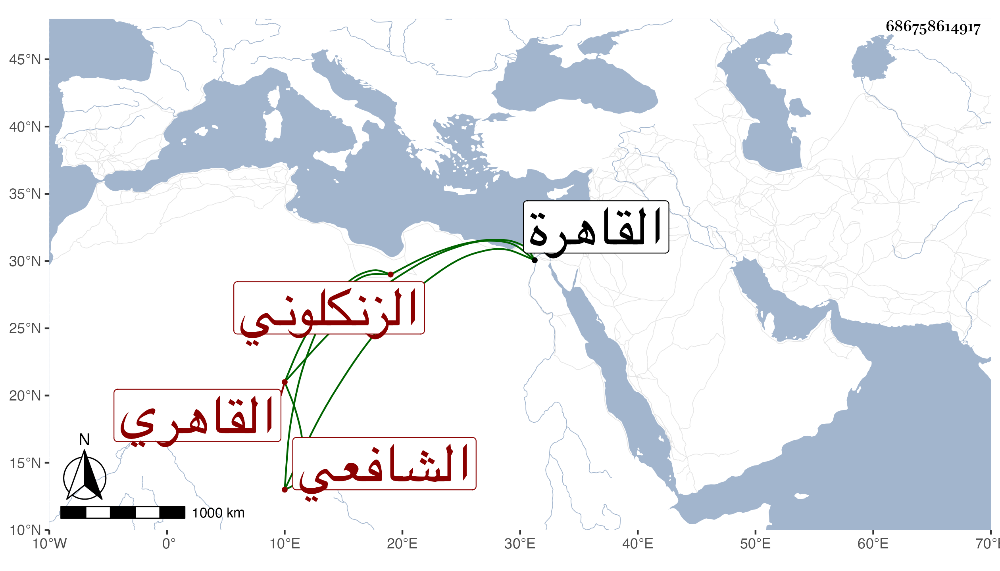

0902Sakhawi.DawLamic.ITO20230111-ara1.EIS1600.686758614917
Biography ID: 686758614917
118
محمد بن أحمد بن محمد ابن شارح التنبيه وغيره المجد أبي الفتوح أبي بكر بن إسماعيل بن عبد العزيز المحب بن التاج بن المحب الزنكلوني القاهري الشافعي ويعرف بالمحب الزنلكوني . ولد في ربيع الأول سنة أربع وثمانين وسبعمائة بالقاهرة ونشأ بها فحفظ القرآن والتنبيه وعرضه على ابن الملقن والعراقي والكمال الدميري وأجازوا له واشتغل في الفقه على الشمس البوصيري وغيره ، وحج في سنة اثنتي عشرة وناب في القضاء عن الجلال البلقيني فمن بعده وباشر بالصالحية النجمية وغيرها ، وكان ساكنا محتشما خبيرا بالمباشرة تعلل مدة وتكررت إشاعة موته مرارا حتى كانت في سادس شعبان سنة ست وخمسين رحمه الله .
